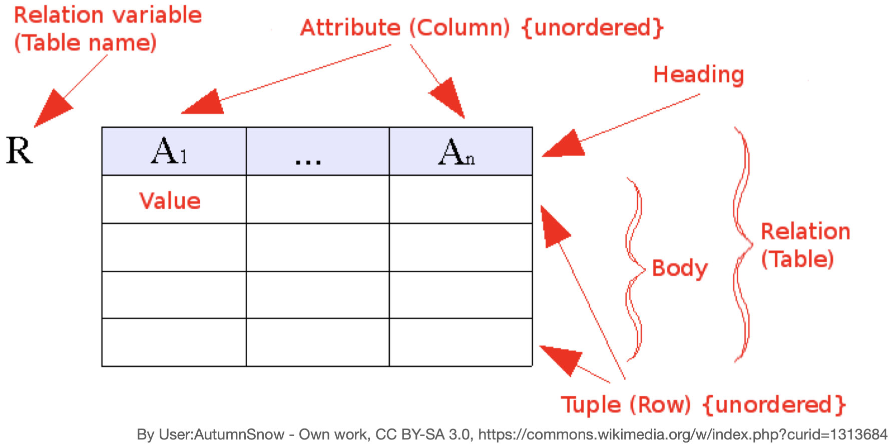
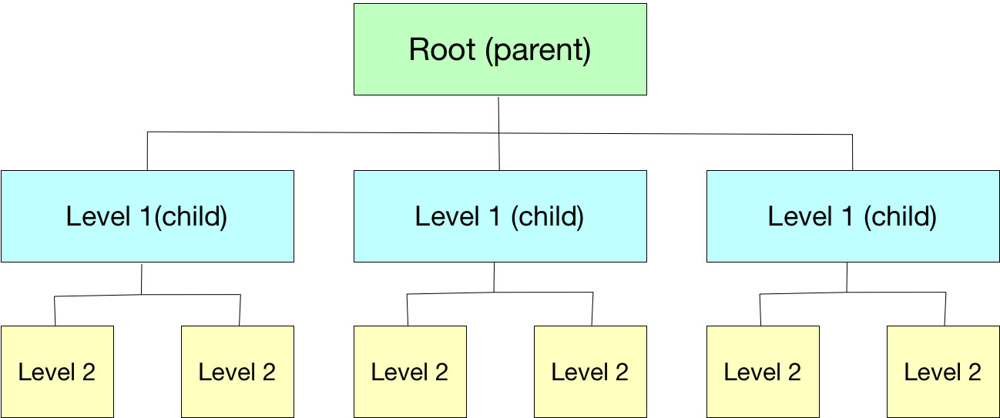

Cartography of the Indigenous
image credit: Smithsonian (2016). The Great Inka Road: Engineering and Empire.
[online exhibit]
- What is a Geographic Information System (GIS)?
- What is a Data Model?
- Geographic Information System
- collections of tools, data, hardware, and people
- Geographic Information Science
- systematic inquiry into research questions about the relationship between GIS and socio-natural systems
- Geographic Information conStruction
- tool building for storage, collection or analysis of geospatial data
Wright, D. J., Goodchild, M. F., & Proctor, J. D. (1997). Demystifying the Persistent Ambiguity of GIS as ‘Tool’ versus ‘Science’. Annals of the Association of American Geographers, 87(2), 346-362. doi:10.1111/0004-5608.872057

The system of organization can be digital (software) or analog (drawn on paper).
The actual process of organization is done with a purpose by human beings.
- Critical GIS
- Qualitative GIS
- Feminist GIS
- Indigenous GIS
image credit: NASA (2019). 2019 Hurricane Season Resources. NASA Global Precipitation Management
[blog] https://gpm.nasa.gov/applications/hurricanes-2019, last accessed 2023-03-20.
image credit: NASA (2019). 2019 Hurricane Season Resources. NASA Global Precipitation Management
[blog] https://gpm.nasa.gov/applications/hurricanes-2019, last accessed 2023-03-20.


- Entities
- Relationships
- Attributes (aka "data")
"Perhaps I am naive, but I am optimistic that -- despite history -- maps can be constructed on the basis of mutual courtesy and respect." (p 5)
"Like many, they [Inuit informants for colonial map making processes] were unwitting conspirators to their own disenfranchisement." (p 9) But now "... they made a conscious and concerted decision to engage with the enfranchised culture on its own terms, turning its technology and politicas to their own purposes." (p 10)?
"The model for dealing with this complexity over the last century has been what Scott (1998) refers to as "Authoritarian High Modernism," that is, making the landscape and the people legible to outsiders. This has huge dangers, as to be legible is to be more easily controllable. Not to be legible is to be invisible. Mapping is a two edged sword." (p 30)
Scott, James C. (1998). Seeing Like a State: How Certain Schemes to Improve the Human Condition Have Failed. New Haven: Yale University Press.
- Cyclical and multi-cyclical time
- Proper time and proper space
- Fluid and dynamic spatiotemporal boundaries
- Support for narratives
- Contingency-based timing
- Privacy safeguards